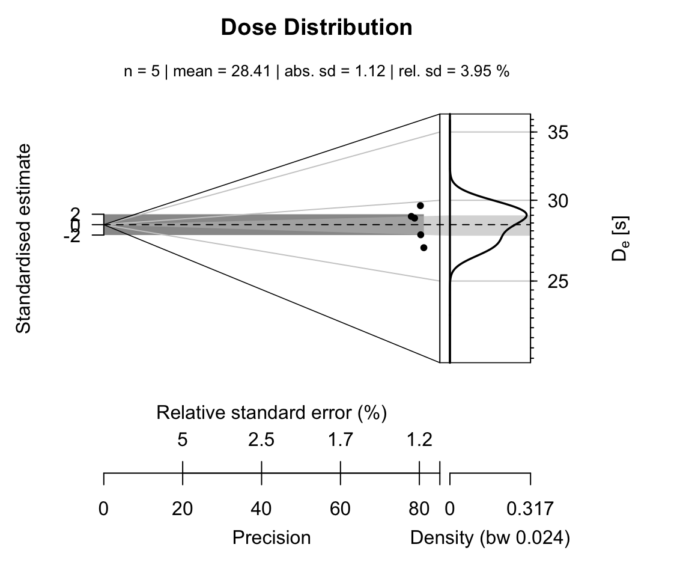

vignettes/HowTo_analyse_Al2O3.Rmd
HowTo_analyse_Al2O3.RmdThe package ‘Luminescence’ offers three distinct functions dealing with the analysis of Al\(_{2}\)O\(_{3}\):C chip measurements:
Only the last function is usually needed to routinely estimate the (environmental \(\gamma\)-) dose the chip had received. However, the first two functions are needed to correct for equipment related issues. If you have already performed the first two analyses or you do not feel the need for them, you can directly start with the Sec. 4.
The following tutorial assumes that all measurements have been performed on a Freiberg Instruments lexsyg SMART luminescence reader (Richter et al., 2015). Nevertheless, the general procedure should also work for other luminescence readers. However, please keep in mind that for readers without a separate measurement chamber the determination of the irradiation cross-talk becomes indispensable and should not be skipped.
Please further note that this vignette covers only the R related part of the data analysis and will not explain the theoretical and physical background. Please see Kreutzer et al. (2018), for details.
To determine the irradiation time correction factor the function analyse_Al2O3C_ITC() is used. The measurement sequence is based on the suggestions made by Kreutzer et al. (2018). To import the measurement data run the function read_XSYG2R(). The curve selection is done automatically by the function using the argument recordType (preset). Modify this argument if the selection here does not fit your equipment.
library(Luminescence) data_ITC <- read_XSYG2R("MyIrradiationTimeCorrectionMeasurement.XSYG", fastForward = TRUE) data_ITC
##
## [RLum.Analysis-class]
## originator: read_XSYG2R()
## protocol:
## additional info elements: 0
## number of records: 400
## .. : RLum.Data.Curve : 400
## .. .. : #1 TL (UVVIS) <> #2 TL (NA) <> #3 TL (NA)
## .. .. : #4 OSL (UVVIS) <> #5 OSL (NA) <> #6 OSL (NA) <> #7 OSL (NA) <> #8 OSL (NA)
## .. .. : #9 TL (UVVIS) <> #10 TL (NA) <> #11 TL (NA)
## ... <remaining records truncated manually>The imported data are either a single RLum.Analysis object or a list of such objects, which can be directly passed to the function analyse_Al2O3C_ITC().
Please note that if you follow the suggestions by Kreutzer et al. (in press) no further function arguments are necessary.
results_ITC <- analyse_Al2O3C_ITC(object = data_ITC)
##
## [analyse_Al2O3C_ITC()]
##
## Used fit: EXP
## Time correction value: 2.59 ± 0.05Dose response curve used to correct the irradiation time for the movement duration of the sample carrier.
The analysis returns a plot (Fig.) and the output is stored in the object results_ITC and will be used later.
The data import is similar to the data import given above (including the automatic curve selection).
library(Luminescence) data_CT <- read_XSYG2R("MyCrossTalkIrradiationMeasurement.XSYG", fastForward = TRUE) data_CT
##
## [RLum.Analysis-class]
## originator: read_XSYG2R()
## protocol:
## additional info elements: 0
## number of records: 21
## .. : RLum.Data.Curve : 21
## .. .. : #1 OSL (UVVIS) <> #2 OSL (NA) <> #3 OSL (NA) <> #4 OSL (NA) <> #5 OSL (NA)
## .. .. : #6 TL (UVVIS) <> #7 TL (NA) <> #8 TL (NA)
## .. .. : #9 OSL (UVVIS) <> #10 OSL (NA) <> #11 OSL (NA) <> #12 OSL (NA) <> #13 OSL (NA)
## .. .. : #14 TL (UVVIS) <> #15 TL (NA) <> #16 TL (NA)
## .. .. : #17 OSL (UVVIS) <> #18 OSL (NA) <> #19 OSL (NA) <> #20 OSL (NA) <> #21 OSL (NA)For the data analysis the function analyse_Al2O3C_CrossTalk() is called. Amongst others, the function has a parameter called irradiation_time_correction. This parameter can be left empty or the results from the previous irradiation time correction measurements can be directly passed to the function. Graphical results are shown in Fig.\(~\). The numerical output is again an RLum.Results object which can be kept for a later usage, i.e. for an automatic correction during the dose estimation.
results_CT <- analyse_Al2O3C_CrossTalk( object = data_CT, irradiation_time_correction = results_ITC)
Graphical function output of the crosstalk data analysis. Please note that the plot shows the results from repeated cross-talk measurements as described by Kreutzer et al. (2018).
This section describes the workflow for the final apparent dose estimation of an Al\(_{2}\)O\(_{3}\) chip. The analyses done above are not necessary but recommended to correct for the equipment characteristics.
The data import follows the examples given below and consists of calling the function read_XSYG2R(). An additional curve selection is not necessary, so far the sequence follows the suggestion by Kreutzer et al. (2018)
library(Luminescence) data_EnvD <- read_XSYG2R("MyEnvironmentalDoseMeasurement.XSYG", fastForward = TRUE) data_EnvD
For the analysis of the environmental dose the Al\(_{2}\)O\(_{3}\) chips received, the results from the estimation of the irradiation time correction analysis and the cross-talk measurements are provided as input objects. The function automatically corrects for both effects. If this is not wanted the arguments can be set to NULL (the default)
results_EnvD <- analyse_Al2O3C_Measurement( object = data_EnvD, irradiation_time_correction = results_ITC, cross_talk_correction = results_CT)
## [analyse_Al2O3_Measurement()] #2 DE: 26.86 ± 0.33Representive curve plots for one chip. Shown are OSL and TL curves.
## Warning: Stimulation power was not stable for ALQ 1! Results are likely to be
## wrong!For this example six Al\(_{2}\)O\(_{3}\):C chips have been measured. The function returns an object of type RLum.Results:
results_EnvD##
## [RLum.Results-class]
## originator: analyse_Al2O3C_Measurement()
## data: 3
## .. $data : data.frame
## .. $data_table : data.frame
## .. $test_parameters : data.frame
## additional info elements: 1To access the numerical results the given data objects within the RLum.Results object can be accessed using the $ sign:
results_EnvD$data
| DE | DE_ERROR | POSITION | INTEGRAL_RATIO | TRAVEL_DOSIMETER | CT_CORRECTION | CT_CORRECTION_Q2.5 | CT_CORRECTION_Q97.5 | TL_DE | TL_DE.ERROR | UID |
|---|---|---|---|---|---|---|---|---|---|---|
| -2.632571 | 0.0333039 | 1 | -0.4003952 | NA | -0.0048079 | -0.0103915 | 0.0007757 | NA | NA | 2020-11-03-12:27.0.969824076164514 |
| 26.852089 | 0.3391605 | 2 | 4.0749423 | NA | -0.0039095 | -0.0089509 | 0.0011319 | NA | NA | 2020-11-03-12:27.0.178731259889901 |
| 27.691550 | 0.3492033 | 3 | 4.2050228 | NA | -0.0029413 | -0.0074883 | 0.0016057 | NA | NA | 2020-11-03-12:27.0.695472405292094 |
| 29.690362 | 0.3613465 | 4 | 4.5070818 | NA | -0.0019034 | -0.0060071 | 0.0022003 | NA | NA | 2020-11-03-12:27.0.695943228667602 |
| 29.008400 | 0.3663587 | 5 | 4.3999199 | NA | -0.0007957 | -0.0045106 | 0.0029191 | NA | NA | 2020-11-03-12:27.0.144869747338817 |
| 28.842445 | 0.3652846 | 6 | 4.3757229 | NA | 0.0003817 | -0.0030023 | 0.0037657 | NA | NA | 2020-11-03-12:27.0.746038659475744 |
This table is as data.frame and can be further treated with standard methods in R. For example, the table show one extreme value on position (the first row). This value has obviously no meaning and indeed, here the value was biased due to a technical error and should be removed from the data set.
results_table <- results_EnvD$data[-1,]
In a last step the results can be plotted, e.g., using the Abancio Plot (Dietze et al., 2016).
plot_AbanicoPlot( data = results_table[,1:2], zlab = expression(paste(D[e], " [s]")), main = "Dose Distribution", summary = c("n", "mean", "sd.abs", "sd.rel") )

##Further analysis
To further data processing steps might be of particular interest in the given context:
Usually, the data set to analyse contains chips, which were used as travel dosimeters, i.e. this chips were reset in the field at the time the other dosimeters were taken and then transported along with the field dosimeters. The dose of the travel dosimeters is subtracted from the measured dose of the field dosimeters. This can be done manually or automatically using the argument travel_dosimeter in the function analyse_Al2O3C_Measurement(). For the data set given above the analysis can be used as follows, assuming that the travel dosimeters were placed on measurement position 2 and 3:
results_EnvD_alternative <- analyse_Al2O3C_Measurement( object = data_EnvD[-1], travel_dosimeter = c(2,3), irradiation_time_correction = results_ITC, cross_talk_correction = results_CT, verbose = FALSE, plot = FALSE) results_EnvD_alternative
##
## [RLum.Results-class]
## originator: analyse_Al2O3C_Measurement()
## data: 4
## .. $data : data.frame
## .. $data_table : data.frame
## .. $test_parameters : data.frame
## .. $data_TDcorrected : data.frame
## additional info elements: 1The original data set remains untouched, but the now the returned object contains a new, additional, object called data_TDcorrected with the corrected values:
results_EnvD_alternative$data_TDcorrected
## DE DE_ERROR POSITION
## 1 2.432243 0.7172805 4
## 2 1.707280 0.7168674 5
## 3 1.551068 0.7137182 6So far all returned values had the unit s (seconds), however, usually, the energy dose is wanted. To transform the values from the time domain to the dose domain, the function Second2Gray() can be used. Please make sure that you recalculate your calibration values to the measurement date.
The analysis steps for the irradiation time correction and the irradiation cross-talk estimation might do not want to be repeated for every analysis. Thus, R allows the save results and recall them for the next analysis using the functions save() and load()
Dietze, M., Kreutzer, S., Burow, C., Fuchs, M.C., Fischer, M., Schmidt, C., 2016. The abanico plot: visualising chronometric data with individual standard errors 31, 12–18. doi:10.1016/j.quageo.2015.09.003
Kreutzer, S., Martin, L., Guérin, G., Tribolo, C., Selva, P., Mercier, N., in press. Environmental Dose Rate Determination Using a Passive Dosimeter: Techniques and Workflow for alpha-Al2O3:C Chips. Gechromometrie 45, 56-67. doi: 10.1515/geochr-2015-0086
Richter, D., Richter, A., Dornich, K., 2015. Lexsyg smart — a luminescence detection system for dosimetry, material research and dating application. Geochronometria 42, 202–209. doi: 10.1515/geochr-2015-0022